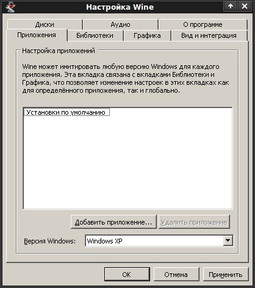
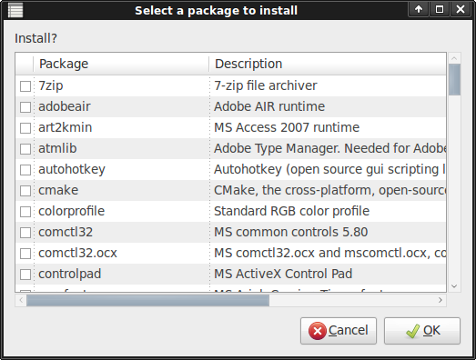
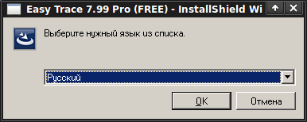

Установка Easy Trace 7.99 PRO FREE в Linux
Краткое описание установки бесплатной версии векторизатора Easy Trace 7.99 PRO FREE в операционной системе GNU/Linux.
Оглавление
- Введение
- Установка и настройка Wine
- Установка дополнительных компонентов с помощью winetricks
- Получение и установка Easy Trace
1. Введение
Как известно, в настоящее время для операционной системы GNU/Linux доступны многие приложения для работы с геоданными (ГИС, СУБД, серверы и т.д.) Сложнее дело обстоит с таким специфическим программным обеспечением, как векторизаторы. Программы для векторизации растровых изображений есть (autotrace, portace и др.), но предназначены они, в первую очередь, для решения «художественных» задач. Однако, с недавнего времени, ГИС-общественности стала доступна бесплатная версия векторизатора Easy Trace, уже зарекомендовавшего себя в профессиональной среде, но работающего только в Windows. Ниже описан способ установки Easy Trace в GNU/Linux (подойдет любой современный дистрибутив).
2. Установка и настройка Wine
Для работы с Windows-программами необходимо установить пакет Wine. Это можно сделать с помощью пакетного менеджера вашего дистрибутива (например, Synaptic в Ubuntu) или с помощью нескольких команд в консоли (понадобятся права суперпользователя). Пример для Ubuntu/Debian:
$ sudo aptitude install wine cabextract wine-gecko
Кроме собственно Wine, необходимы также cabextract для извлечения файлов *.CAB и wine-gecko для отображения интернет-страниц.
Если по каким-либо причинам вы не можете воспользоваться пакетными менеджерами, можно загрузить бинарные пакеты для различных дистрибутивов с официального сайта проекта или установить Wine из исходного кода.
После установки наберите в командной строке
$ winecfg
(или поищите в системном меню Configure Wine ) для запуска утилиты конфигурирования. Утилита создает каталог ~/.wine в домашнем каталоге, позволяет выбрать «эмулируемую» версию Windows для каждого приложения, настроить графику, использование библиотек и т.д.

3. Установка дополнительных компонентов с помощью winetricks
Winetricks — это скрипт для быстрой загрузки и установки распространённых исполняемых библиотек, иногда необходимых для запуска программ в Wine.
Получить его проще всего командой:
$ wget http://www.kegel.com/wine/winetricks
Затем следует сделать скрипт исполняемым:
$ chmod +x winetricks
В некоторых дистрибутивах Linux (Suse, ALT Linux) пакет winetricks уже включен в состав Wine, в других его можно установить отдельно через пакетный менеджер. Например, в Ubuntu воспользуйтесь Synaptic или введите в командной строке:
$ sudo aptitude install winetricks
После того, как winetricks установлен, можно просто выполнить команду winetricks в консоли. Если winetricks запущен без дополнительных параметров, открывается графический интерфейс со списком доступных пакетов. В нашем случае необходимо выбрать gdiplus, ole2, vb6run, vcrun6, allfonts и нажать ОК.

Также можно установить пакеты, указав их имена в качестве
параметров
для команды winetricks, и программа
немедленно начнёт их установку.
$ sh winetricks gdiplus ole2 vb6run vcrun6 allfonts
В процессе установки иногда могут появляться стандартные Windows-установщики.
4. Получение и установка Easy Trace
Бесплатная версия Easy Trace 7.99 PRO FREE доступна по ссылке на официальном сайте. После загрузки щелкните по файлу et799rus.exe или наберите в консоли wine et799rus.exe для запуска программы установки.
Выберите язык (русский/английский), подготовка к установке может занять некоторое время.
Далее стандартный диалог проведет установку по пунктам:
 |
 |
 |
 |
 |
 |
 |
После установки появится каталог ~/.wine/drive_c/Program
Files/Easy
Trace
Group/Easy
Trace 7.99 Pro (FREE), в системном меню
появится соответствующий пункт (в разных окружениях рабочего стола
или
оконных менеджерах пункты меню могут быть разными),
а на рабочем столе
появится «ярлык». Доступна
также обширная справка и примеры проектов.
Как известно, в Linux это не единственный способ
настроить запуск
программы. Любители командной строки могут сделать так называемый
«псевдоним» (alias). Для
«одноразового» его применения надо в консоли набрать
(с указанием
полного пути к исполняемому файлу et.exe):
$ alias easytrace='wine /home/user/.wine/drive_c/Program\ Files/Easy\ Trace\ Group/Easy\ Trace\ 7.99\ Pro\ \(FREE\)/et.exe'
После этого можно запускать Easy Trace из консоли, набрав easytrace. Для постоянного
использования следует прописать эту же строку в файл ~/.bashrc (в котором хранятся
настройки командной оболочки bash).
Всё, Easy Trace готов к векторизации в связке
со свободными ГИС!

Дата создания: 20.10.2010
Автор(ы): Александр Мурый